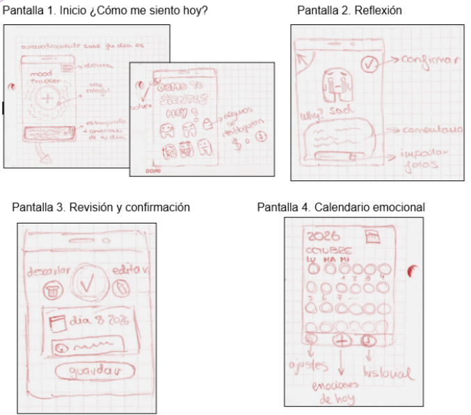

Sketch
- Sketch: boceto a mano de las pantallas de inicio, emoción, motivo, registro y calendario
- Cambió en Figma: se añadieron fondos de colores y efectos de cristal
- Cambió en Figma: los hámsters sustituyeron a las caritas genéricas
- Cambió en Figma: aparecieron la pantalla de error y la barra inferior
